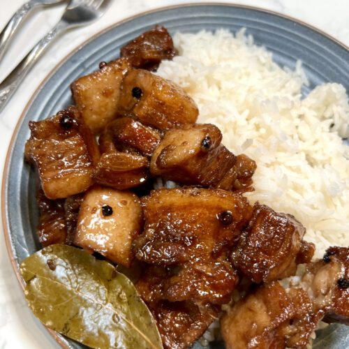

Home

Description
Adobo is a classic Filipino dish typically made with meat (usually chicken or pork) that's marinated and slowly cooked in a flavorful sauce primarily composed of vinegar, soy sauce, garlic, black peppercorns, and bay leaves, resulting in tender meat with a rich, savory, and slightly tangy taste; it's often served with a side of rice and considered a staple in Filipino cuisine.
This would definitely be in my Top 3 Filipino dishes
Prep: 10 minutes, Cook: 1 hour
Servings for 4 people:
- 2 lbs pork belly
- 2 tbsp garlic
- 5 dried bay leaves
- 4 tbsp vinegar
- 1/2 cup soy sauce
- 1 tbsp peppercorn
- 2 cups water
- salt to taste
- Combine the pork belly, soy sauce, and garlic then marinade for at least 1 hour
- Heat the pot and put-in the marinated pork belly then cook for a few minutes
- Pour remaining marinade including garlic.
- Add water, whole pepper corn, and dried bay leaves then bring to a boil. Simmer for 40 minutes to 1 hour
- Put-in the vinegar and simmer for 12 to 15 minutes
- Add salt to taste
- Serve hot. Share and enjoy!